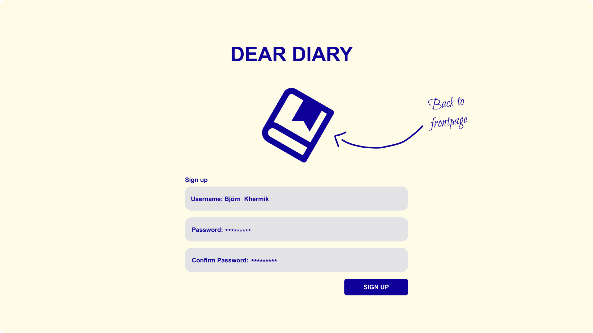
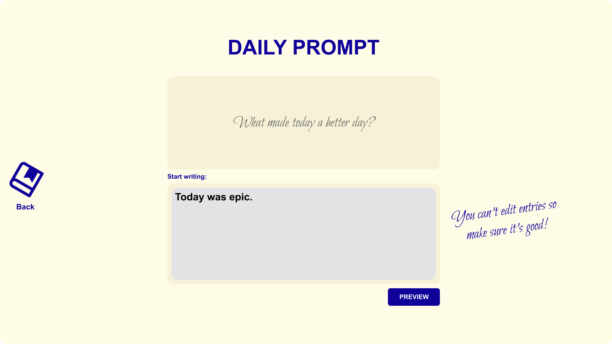

Dear Diary App
Dear Diary is a digital diary application that lets users write a daily journal entry guided by a daily prompt. Users can create an account, write their entries, and later browse through their earlier ones. An admin account can change the daily prompt, manage user accounts, and delete entries when needed.
The app was a course project for the Ohjelmistotekniikka (Software Engineering) course at the University of Helsinki. It is written in Python and managed with Poetry. Because it was my first time designing an application from scratch, I had to think about every decision, and how it would impact the app broadly, from the architecture to the testing approach. The project is documented in full, with a requirements specification, architecture description, testing documentation, user guide, changelog and working hours.
I started by defining the requirements and sketching the structure of the app, and then built the features step by step: user accounts and login first, then the daily prompt and entry writing, and finally the entries page and admin tools. Along the way I wrote automated tests, tracked test coverage, and used linting to keep the code clean. This taught me a lot about structuring code so that it stays readable and easy to extend.
As a team, we sketched ideas for a visual overhaul of the application's main view on paper, and I then built the prototype in Figma. Along the way I learned a great deal about the design process. After that, we implemented the new design in the application itself. Watching our ideas come to life and seeing the effect on usability was especially rewarding.
Overall, The project was a great opportunity to learn how to develop software having future development in mind.
Dear Diary App on GitHub
